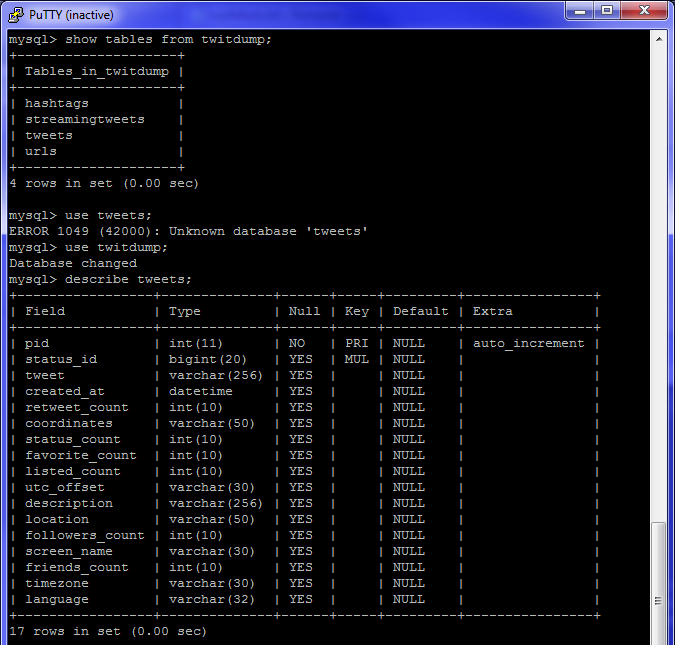
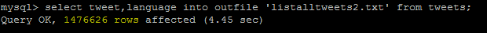
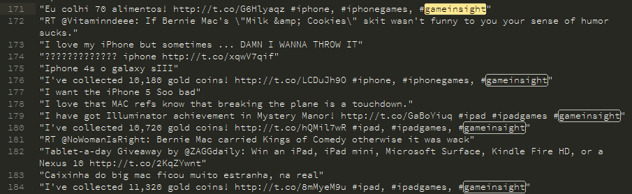
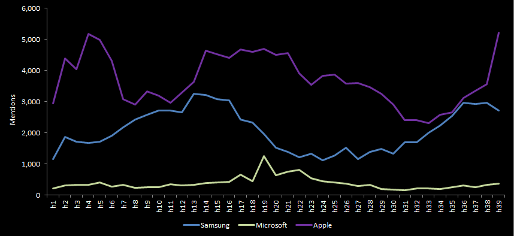
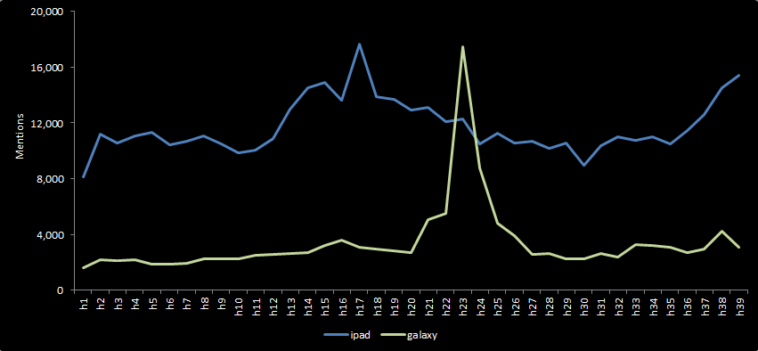
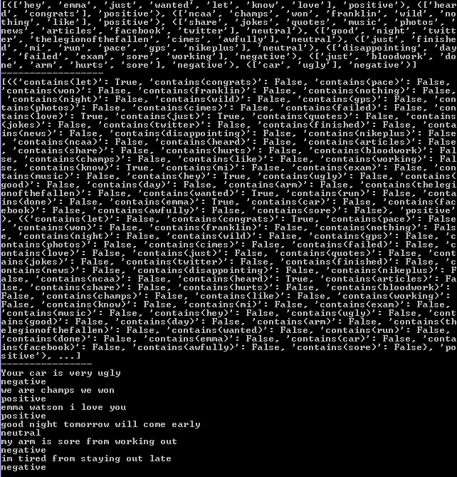

Sentiment on Twitter
R/GA Innovation Group Presentation
Thesis
There is a growing abundance of unstructured data and obvious limitations in out of the box platforms we use to acquire and analyze data. There is a continously growing need to perform more timely and in-depth analysis to maximize potential insight. Achieving this requires larger datasets and a deeper understanding of how current tools technically function to conduct natural language processing and other analysis.
Approach
- Access: Write script.py to access Twitters streaming API
- Storing: Setup a MySQL database on our vmsf-analytics-001 server to store tweets
- Analyzing: Quering the database as well as use NLP to find sentiment
Challenges
- Storing the desired data in a continous fashion
- Assigning the author's intended meaning to language
Are unwanted tweets streaming in because of vague keywords, is the script timing out, etc?
A linguistics professor was lecturing to her class one day. "In English," she said, "A double negative forms a positive. In some languages, though, such as Russian, a double negative is still a negative. However, there is no language wherein a double positive can form a negative."
A voice from the back of the room piped up, "Yeah . . .right."
Overview of Work
Stream Tweets Into Our Database
import time
import json
from getpass import getpass
import tweepy
import MySQLdb
import unicodedata, re
from guess_language import guess_language
from datetime import datetime
all_chars = (unichr(i) for i in xrange(0x110000))
control_chars = ''.join(map(unichr, range(0,32) + range(127,160)))
control_char_re = re.compile('[%s]' % re.escape(control_chars))
class StreamListener(tweepy.StreamListener):
def remove_control_chars(self,s):
return control_char_re.sub('',s)
def on_status(self, status):
db = MySQLdb.connect("localhost", "root", "password1", "twitdump")
coord = ''
if status.coordinates != None:
coord = status.coordinates['coordinates']
cursor = db.cursor()
try:
cleantweet = self.remove_control_chars(status.text)
cleantweet = cleantweet.encode('latin-1', 'replace')
language = guess_language(cleantweet)
#print 'TWEET[' + status.id_str + '] ' + cleantweet
#print 'about to insert... '
cursor.execute("""INSERT INTO tweets(status_id, tweet, created_at, retweet_count, coordinates, status_count, favorite_count, listed_count, utc_offset, description, location, followers_count, screen_name, friends_count, timezone, language) VALUES (%s, %s, %s, %s, %s, %s, %s, %s, %s, %s, %s, %s, %s, %s, %s, %s)""",
(status.id_str, cleantweet, status.created_at,
status.retweet_count, coord, status.user.statuses_count,
status.user.favourites_count, status.user.listed_count,
status.user.utc_offset, status.user.description,
status.user.location, status.user.followers_count,
status.user.name, status.user.friends_count, status.user.time_zone, language))
#print 'entity is is: ' + status.id_str
for tag in status.entities['hashtags']:
#print 'tag: ' + tag['text']
cursor.execute("""INSERT INTO hashtags(status_id, hashtag) VALUES (%s, %s)""",
(status.id_str, tag['text']))
for urlitem in status.entities['urls']:
#print 'urls: ' + urlitem['expanded_url']
#print 'shorturl: ' + urlitem['url']
fullurl = urlitem['expanded_url']
if len(fullurl) > 255:
fullurl = fullurl[0:255]
cursor.execute("""INSERT INTO urls(status_id, fullurl, url) VALUES (%s, %s, %s)""",
(status.id_str, fullurl, urlitem['url']))
db.commit()
except Exception, e:
now = datetime.now()
print 'exception [' + now.strftime('%Y-%m-%d %H:%M') + '] ' + str(e)
db.rollback()
db.close()
def on_error(self, status_code):
print 'Error code = %s' % status_code
return True
def on_timeout(self):
print 'timed out.....'
if __name__ == "__main__":
consumer_key = 'NoJ5J9Ky2gCNZSidtYAExg'
consumer_secret = 'Qp98zFS1oveq3QtLr7H4zwB43xpeF9zH4GI5qStDU'
access_key = '449837385-HIhvUsYF5S6Eo3xpR3wE3Kr3bReiPqBJqU7tQ54'
access_secret = '5hJvmy3WRKky91Uv7BpQEOYWBOkjZlEe4LLFAoG0ec'
auth1 = tweepy.OAuthHandler(consumer_key, consumer_secret)
auth1.set_access_token(access_key, access_secret)
api = tweepy.API(auth1)
l = StreamListener()
print 'about to stream'
stream = tweepy.Stream(auth1, l)
setTerms = ['windows8', 'windows 8', 'win 8', 'win8', 'surface tablet', 'microsoft surface','samsung', 'apple', 'kindle', 'galaxy', 'nexus', 'ipad', 'iphone', 'mac', 'osx','iOS']
stream.filter(None,setTerms)
Tweets streamed successfully from the evening of 11/30 to the morning of 12/2
Populated MySQL Database
Total Number of Tweets
In 36 hours accumulated roughly 1.5MM
Have many more dimensions of data to work with for each tweet
Followers count, listed count, retweet count, favorite count, coordinates, created at, status count, friends count, language
Access to exponentially more tweets
1.5 MM compared to 2K
Initial Analysis
- Queried top hashtags and urls from database created
- Created quick script to find most common words used
Most Frequent Words/Tokens
- "t": 1027618, "co": 978722, "http": 966054
- "I": 480836
- "gameinsight": 394655
- "ipad": 303044
- "ipadgames": 28619
- "the": 277413
- "RT": 277399
- "iPhone": 250838
- "ve": 236329
- "to": 191698
- "iphone": 180564
- "for": 176334
- "gold": 171363
- "coins": 170985
- "collected": 170964
Top Hashtags
- gameinsight: 410035
- ipad: 326199
- ipadgames: 309637
- iPhone: 141926
- iphonegames: 112650
- kindle: 12992
- apple: 12434
- CSRRacing: 11781
- Christmas: 6114
- MAC: 5875
- deals: 5472
- Galaxy: 5233
- QuizTablet: 4734
- MLSCup: 4609
- app: 4466
Top Urls
- http://gigam.es/pmtw_Tribez: 183501
- http://gigam.es/imtw_Tribez: 55123
- http://gigam.es/petw_Tribez: 45561
- http://gigam.es/ietw_Tribez: 25391
- http://gigam.es/blitz_ptp: 19441
- http://gigam.es/tw_psAlbion: 18782
- http://nmgam.es/csr_invite_twitter: 17192
- http://gigam.es/pqtw_Tribez: 10001
- http://gigam.es/iqtw_Tribez: 7634
- http://gigam.es/ihtw_Tribez: 6556
- http://bit.ly/tw_business: 5556
- http://zagg.to/DYL4g2: 5109
- http://gigam.es/potw_Tribez: 5057
- http://gigam.es/iotw_Tribez: 4281
Example of Tribez tweets
Tweets by hour
Tweets by hour
Challenges with Data
Keywords must be carefully considered and chosen
Ex. Galaxy were playing for MLS Cup,'win 8' very common during football season, etc
All parts of keywords are searched for
Ex. During football season 'win 8' returns a lot of tweets such as, "We are going to win our 8 game this season" or, "Great article, this guy is a winner in the literary field: http://t.co/4567879"
Sentiment Analysis
- Goal is to assign sentiment to each tweet in the database
- First used a much smaller hypothetical dataset
- Was very interesting to see the process determining sentiment and recreating it in python
Pieces needed to determine sentiment
- Large training dataset; very important
- List of stopwords
- Tweets to be analyzed
- Script we wrote
Results with simple data and training set
Process of assigning sentiment

Challenges with Sentiment
Accuracy depends entirely upon sentiment training set
Can cater training set to your business to be very accurate.
Or could have very inaccurate results
#1 Article on Hacker News yesterday
...even then they'd need a team of good NLP people to make it happen, not me explaining ML to their engineers on the board a few hours a week. Useable fine-grained sentiment analysis is not going to be solved as a side project.
Takeaways
- By creating a database, have access to much larger dataset with many more fields
- This more time consuming method can lead to a much better understanding of Crimson Hexagons overall process
- Assigning sentiment depends completely on the training set used
- My personal takeaway is the combination of using Crimson Hexagon for it's strengths along with creating a database of streamed tweets is what I would recommend
CH does this well, but does not give us access to it. We run into issues such as sure it does not time out, manual upkeep, etc
This can particularly be good for specefic launches or events
Future work
- Find large enough training corpuses for different categories/industries of keywords
- Reach
- Gender
Can use fields obtained such as followers count, listed count, retweet count, favorite count, friends count to find both impressions and quality of tweet to find overall reach
Would be difficult but very beneficial if used NLP to find individual tweets gender